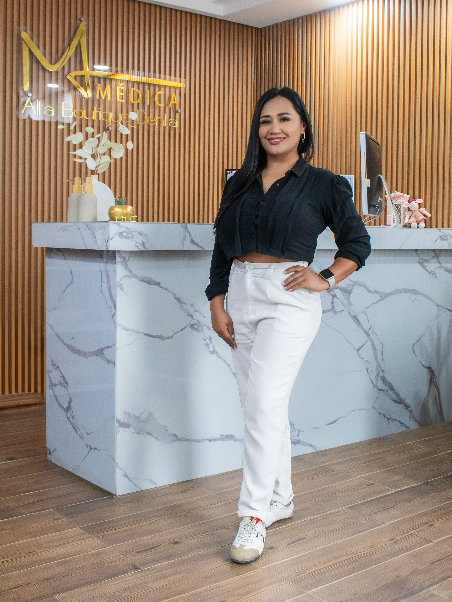
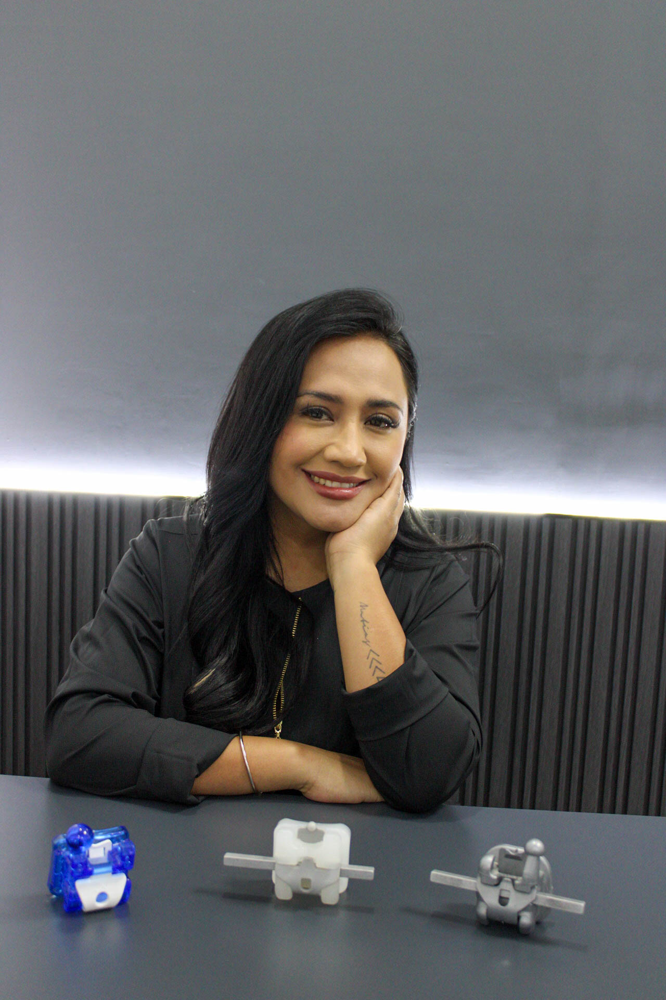

Escáner intraoral
Contamos con tecnología intraoral Sirona integrada a nuestro entorno de trabajo digital, de acuerdo con las necesidades de cada procedimiento.
Bienvenido a MÉDICA ML, Alta Boutique Dental. Un espacio donde la atención especializada se encuentra con la tecnología digital para acompañar el cuidado de tu salud bucal.
● TECNOLOGÍA DIGITAL / ATENCIÓN ESPECIALIZADA

En MÉDICA ML creemos que la atención odontológica debe combinar conocimiento, innovación y una comunicación clara con cada paciente.
Integramos herramientas digitales, equipamiento especializado y un equipo preparado para apoyar el diagnóstico y la planeación de cada caso, de acuerdo con las necesidades clínicas.
Herramientas digitales que forman parte de un flujo de trabajo diseñado para facilitar la obtención de información, la planeación y la colaboración entre profesionales.
Contamos con tecnología intraoral Sirona integrada a nuestro entorno de trabajo digital, de acuerdo con las necesidades de cada procedimiento.
Procesos digitales para apoyar el diseño y la fabricación de soluciones dentales mediante herramientas compatibles con cada caso.
Estudios radiológicos que proporcionan información complementaria para la valoración y la planeación clínica.
Nuestro flujo de trabajo digital propio integra herramientas para facilitar la comunicación entre las distintas etapas del proceso dental.
La tecnología CAD/CAM y el escaneo intraoral forman parte de un entorno de trabajo que busca apoyar la precisión, la organización y la colaboración profesional.
Nuestro gabinete de radiología ofrece diferentes estudios que pueden apoyar la valoración odontológica cuando son indicados por el profesional tratante.
Vista general de las estructuras dentales y maxilares.
Imagen utilizada en evaluaciones cefalométricas.
Apoyo al análisis de relaciones craneofaciales.
Estudio que puede apoyar la evaluación de maduración ósea.
Proyección radiográfica para indicaciones clínicas específicas.
Los estudios se realizan de acuerdo con la indicación profesional y los protocolos aplicables. La selección del estudio depende de cada caso clínico.
Conoce nuestras áreas de atención y solicita información para identificar el servicio adecuado para tus necesidades.
Valoración y orientación para el cuidado de la salud bucal, de acuerdo con las necesidades de cada paciente.
Orientación sobre las áreas odontológicas disponibles y la valoración correspondiente con el profesional indicado.
Apoyo por imagen para complementar la evaluación clínica y facilitar la planeación del tratamiento.
Consulta por WhatsApp la disponibilidad de especialidades y tratamientos antes de acudir.
Comunícate con nuestro equipo y conoce las opciones de atención y estudios disponibles en MÉDICA ML.

Detrás de cada estudio y proceso existe un equipo que trabaja para ofrecer atención profesional, explicar las opciones disponibles y contribuir a una experiencia clara y organizada.
En MÉDICA ML valoramos la capacitación, el uso responsable de la tecnología y la colaboración con los profesionales que confían en nuestros servicios.
Conecta con nosotros ↗Consulta información general y escríbenos si necesitas confirmar un servicio o estudio.
Contáctanos para recibir información sobre nuestros servicios, estudios radiológicos y disponibilidad de atención.